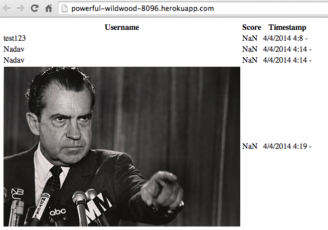
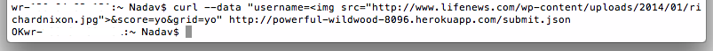
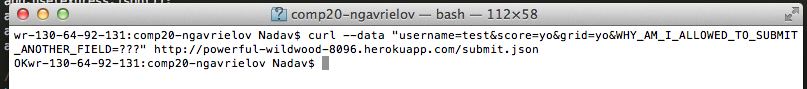
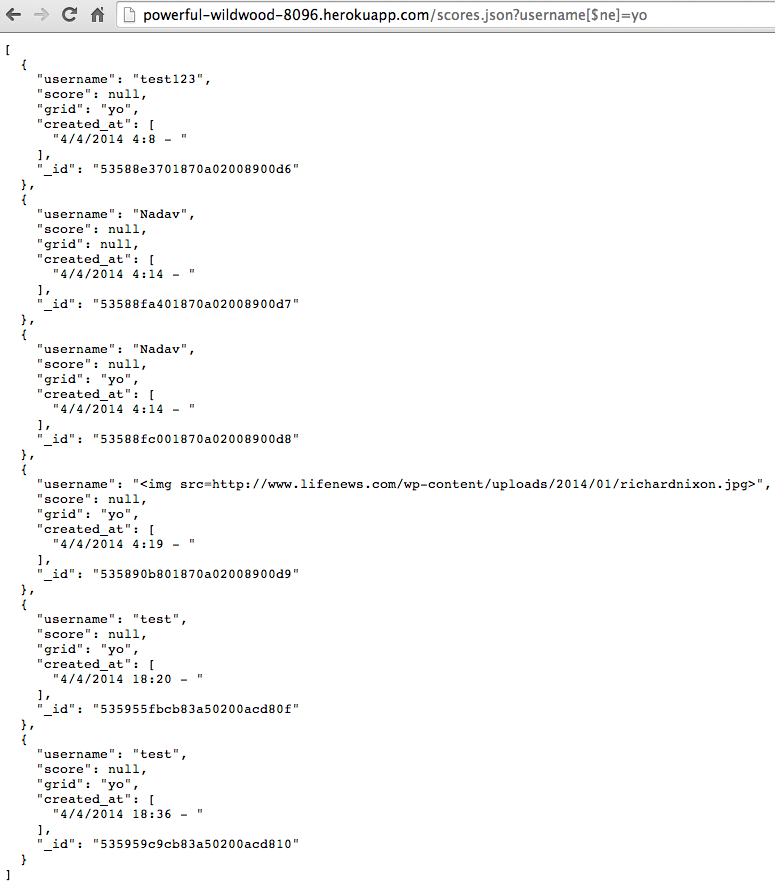

Security Report
Introduction
I conducted a review of Nolan's gamecenter to determine how vulnerable it is. The vulnerabilities that I found ranged from being very severe to less so. I have compiled a report with each of the vulnerabilities below.
Methodology
My method was to go to Nolan's gamecenter and--based off of my experience with my gamecenter--try to guess certain vulnerabilities he may have had. The main tool I used for doing this was curl. Through curling different types of data, I was able to test his database. Then, I opened his source code to find any further areas that I could expose as vulnerabilities.
Abstract of Findings
- The first issue that I found was that it is possible to insert any data into any of the fields in the database. This means you could insert HTML, JS, or something else, which could lead to serious issues for users and damage the website.
- The second issue I found was that you could submit extra fields into the database. This means you could submit as much data as you want to the database and not be limited in any way, which could pose major problems for the website and its speed.
- The third issue I found is that cross-domain sourcing is enabled for all websites. That means anyone could post data from anywhere, without limit by domain.
- The last issue I found was that through a simple manipulation of the URL, one could gain access to all of the data in the database. If there is a sensitive or confidential information in the database, this is a major issue.
Issues found
1: Inserting any data
Issue
Inserting any data into the fields
Location
/submit.json
Severity
Very severe
Description
You can pretty much insert anything into the fields. For example, I inserted a picture of Richard Nixon into the username field. But someone with more malicious intentions could insert something more dangerous, particularly in the form of Javascript.
Proof


Resolution
This issue can be fixed by escaping the data that the user inputs. For instance, the characters < and > could be escaped so as to prevent special tags from being inserted as data.
2: Submitting extra fields into the database
Issue
Inserting extra data
Location
/submit.json
Severity
Moderate
Description
You can insert extra data by including extra fields, as indicated below. This can be a problem because it wastes space in the database. Plus, someone could store something malicious in an extra field.
Proof

Resolution
The post request should be limited so as to only accept the specific fields that are required.
3: Cross domain requests
Issue
Cross domain requests from anywhere
Location
The app.js
Severity
Severe
Description
Cross domain requests are enabled for anywhere because of the *. This could be dangerous as it opens the floodgates to anyone who wants to submit such a request.
Proof & Resolution
Thus a resolution is to limit it to a specific domain. Perhaps a URL with a white list of domains.

4: Accessing all data
Issue
Easy to obtain access to all data [found with the help of Sid and George Brown]
Location
/scores.json
Severity
Very severe
Description
Anyone who puts "$[ne]" for one of the fields can gain access to all of the data.
Proof

Resolution
The database should be edited so that nobody can simply access all of the data as I did by entering [$ne].
Conclusions
Doing this security report revealed several important vulnerabilities in Nolan's (and my) website. Through a few simple manipulations, users could gain access to all of the data in the database, post data from anywhere they wish, and post any amount of data that they wish. Combined, these could all pose major problems for the website and thus are key vulnerabilities that would need to be fixed. It is important to limit these holes in the website to prevent anyone who has malicious intents from being able to bring down the website or damage it.